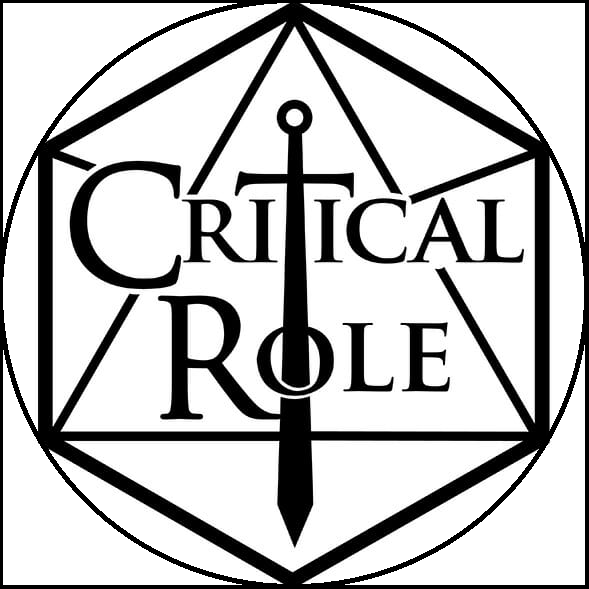

Разработка страниц с сегментированной графикой, анимированной графикой и мультимедиа
Материк Энуран, Аль'танор. Карта изображений, выполненная при помощи HTML

Пример карты изображений с круглой областьюМатерик Энуран, Аль'танор. Карта изображений, выполненная при помощи CSSПример gif-анимацииПример встраивания аудиоПример встраивания видео